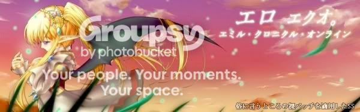
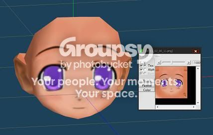

หลายคนอาจเคยเห็นมาก่อนแล้วหรืออาจเคยใช้มาแล้วด้วยซ้ำ อย่าเพื่งเบื่อไป
จริงๆเริ่มเดิมทีมันเป็นความรู้ที่ได้มาจาก Donlanai นานแล้วนะ ตั้งแต่ Saga 6 โน่นเลย
เริ่มจากความอยากรู้อยากเห็นที่หาไปเรื่อย จนกระทั้งได้ข้อมูลดีๆเข้า
เป็นงานที่ได้จากการช่วยกันหาวิธีแก้ปรับแต่งกันเพื่อความสนุกส่วนตัว =w=''
โดยศึกษาจากเว็ปยุ่นเอา จนกระทั้งเข้าใจระบบการทำงานต่างๆ แล้วการแก้ไขไฟล์
วันนี้เห็นประชากรมันน้อยๆก็เลยเอามาแจกวิธีแล้วกันเพื่อจะให้เกมมีสีสรรค์มากขึ้น
*แต่ถ้าพูดกันจริงๆแล้วหลายคนอาจรู้จักกันเยอะแล้ว
แล้วก็อาจทำเป็นกันด้วย จึงอยากจะแจ้งไว้ก่อนว่ากระทู้นี้จัดทำขึ้นเพื่อ
จัดตั้งมาเพื่อแลกเปลี่ยนสกินตกแต่งที่ทำๆกันไว้อย่างอิสระกันได้

มันยังสามาถรนำไปใช้กับชุดในเกมได้อีกด้วย อย่างเช่นชุด โจร เป็นต้น

แล้วแต่เราจะประยุคใช้ว่าจะเอาไปใช้อะไรบ้าง
วิธีติดตั้งแพทเสริม
1.เปิดไฟล์เลือกจุดหมายปลายทางที่จะลงซะ (ที่ล๊อกไว้จะตั้งไว้ที่กระเป๋าเกม)
2.กด Install จากนั้นจะขึ้นคำสั่งดอส ให้ตอบ NO จากนั้นตอบ YES
3.รอทำการติดตั้ง จากนั้นมันจะขึ้น OK เป็นอันเสร็จเปิดเกมเล่นได้เลย
เพราะนั้นแก้ไว้เป็นของเก่าไม่งั้นเสื้อผ้าหายนะเออ...
รอเสร็จสิ้น เข้าเกมได้เลยแล้วสังเกตุความเปลี่ยนแปลงได้เลย ^^
แพทตัวนี้ใส่แก้มแดงให้น่ารักขึ้น~*
Download
สำหรับแพทหื่นต้องไปโหลดที่บล๊อกเอานะเพราะไม่อยากจะโพสที่นี้จิ้มที่ลายเซนเอา
ส่วนใครที่อยากได้อะไรแปลกๆ ไปหาที่นี้ละกัน มันจะอยู่ตรงลิ้งที่ชื่อ パッチ置き場
http://db.sagaeco.com/index.php?%CA%DD% ... 5%A4%A5%F3
พาสที่รู้คือ : ecoero eco saradakare- ลองไล่หาดูแล้วกันนะว่าอันไหน
สุดท้ายนี้การปรับแต่งตัวเกมทุกครั้งมีผลต่อการทำให้ตัวเกมเีสีัยหายได้เหมือนกัน
ฉะนั้น backup ทุกครั้งด้วยน้าา ไม่งั้นมาโทษกันมิได้ละ หุหุ
ตัวอย่างเมื่อนำไปใช้ในเกม

**ต้องบอกก่อนนะว่าวิธีนี้ไม่สามารถเอาไปโกงเกมได้เพียงแต่ใช้เพื่อความสวยงาม
ซึงเห็นในเครื่องเท่าเท่านั้นนะ!!**
สุดท้ายนี้ขอบคุณเหล่านางแบบทั้งหลายที่มาออกงานนี้ด้วยนะ~♪


 ช่างน่าค้นหาจริงๆ ให้ตายเถอะ
ช่างน่าค้นหาจริงๆ ให้ตายเถอะ